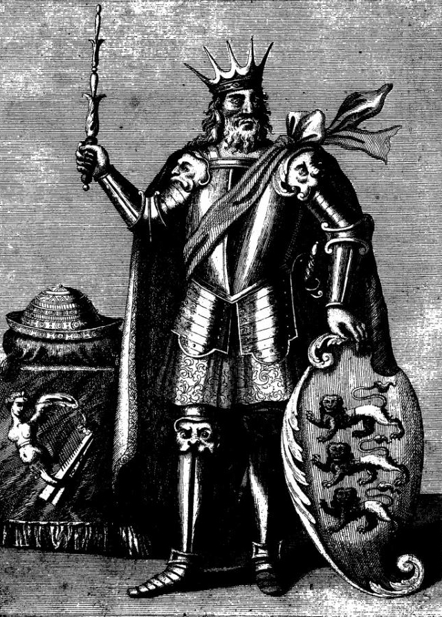
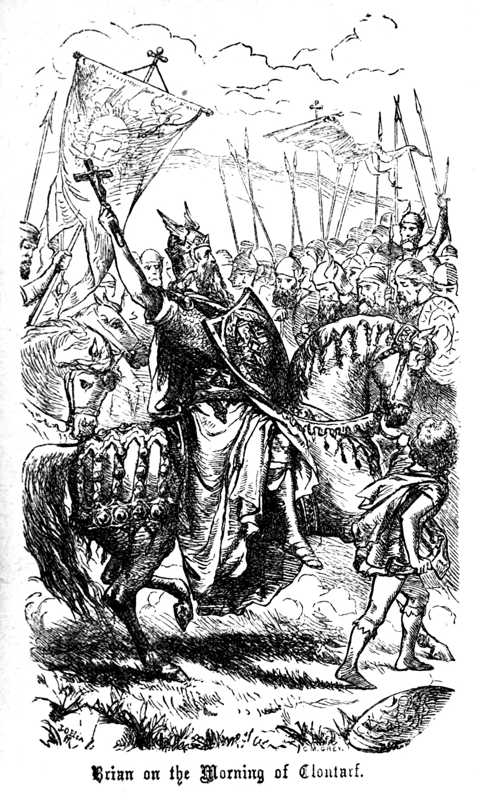
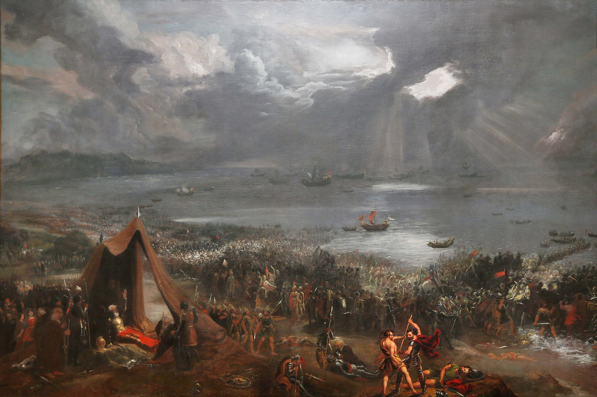
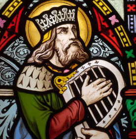

Brian Boru
The Man
Medieval Ireland's most famous king, Brian Boru, c.941-1014, belonged to the Dál Cais dynasty whose main royal stronghold was just north of the town of Limerick at Kincora, Cenn Corad, which is now Killaloe, Co. Clare. Although the Dál Cais were not particularly powerful to begin with, Brian built on the successes of his father, Cennétig, and particularly his older brother, Mathgamain, to make himself overking of all the various Munster kingdoms, and later to seize the high-kingship of Ireland.
Brian was one of twelve sons, and as a younger son was not expected to become king. His own family was also extensive. Offspring, in the Middle Ages, were often used to make politically advantagous marraiges, and Brian's many sons and daughters were no different. As can be seen from the tree below, many of Brian's daughters were married off to important rivals in order to create or cement political alliances - a practice which was not always sucessful.
The Life

Brian's hard-won authority was seriously challenged in 1013 when his ally Máel Sechnaill was attacked by the Cenél nEógain king Flaithbertach Ua Néill, with the Ulstermen as his allies. This was followed by further attacks on Máel Sechnaill by the Dubliners under their king Sihtric Silkbeard and the Leinstermen led by Máel Mórda mac Murchada. Brian campaigned against these enemies in 1013. In 1014, Brian's armies confronted the armies of Leinster and Dublin, with Norsemen fighting on both sides, at Clontarf near Dublin on Good Friday. The resulting Battle of Clontarf was a bloody affair, with Brian, his son Murchad, and Máel Mórda among those killed. The list of the noble dead in the Annals of Ulster includes Irish kings, Norse Gaels, Scotsmen, and Scandinavians.
The immediate beneficiary of the slaughter was Máel Sechnaill, who resumed his interrupted reign. The Norse-Gaels and Scandinavians also produced works mentioning Brian, including Njal's Saga, the Orkneyinga Saga, and the now-lost Brian's Saga. Brian's war against Máel Mórda and Sihtric was to be inextricably connected with his complicated marital relations, in particular his marriage to Gormlaith, Máel Mórda's sister and Sihtric's mother, who had been in turn the wife of Amlaíb Cuarán, king of Dublin and York, then of Máel Sechnaill, and finally of Brian.
Brian did not free Ireland from a Norse (Viking) occupation, simply because it was never conquered by the Vikings. In the last decade of the 8th century, Norse raiders began attacking targets in Ireland and, beginning in the mid-9th century, these raiders established the fortified camps that later grew into Ireland's first cities: Dublin, Limerick, Waterford, Wexford, and Cork. Within only a few generations, the Norse citizens of these cities had converted to Christianity, intermarried with the Irish, and often adopted the Irish language, dress and customs, thus becoming what historians refer to as the Hiberno-Norse.
Such Hiberno-Norse cities were fully integrated into the political scene in Ireland long before the birth of Brian. They often suffered attacks from Irish rulers, and made alliances with others. Rather than conquering Ireland, the Vikings, who initially attacked and subsequently settled in Ireland, were, in fact, assimilated by the Irish.
Battle of Clontarf
Máel Mórda was aware that the High King would return to Dublin in 1014 to try once more to defeat him. He may have hoped that by defying Brian, he could enlist the aid of all the other regional rulers. If so, he was sorely disappointed. The province of Ulster and most of the province of Connacht failed to support either side of the conflict, with the exception of a single ruler in Ulster who sent troops to Máel Mórda. His inability to obtain troops from any rulers in Ireland, may explain why Máel Mórda sought support from rulers outside Ireland. He instructed his subordinate and cousin, Sigtrygg, the ruler of Dublin, to travel overseas to enlist aid.
Contrary to the assertions made in the Cogadh Gaedhil re Gallaibh, this was not an attempt by the Vikings to reconquer Ireland. All of the Norsemen, both the Norse-Gaels of Dublin and the Norsemen from the Isles, were in the service of Máel Mórda. The High King had 'Vikings' in his army as well: the Hiberno-Norse of Limerick and probably those of Waterford, Wexford, and Cork as well. Some sources include a rival gang of Norse mercenaries from the Isle of Man. Essentially this conflict was an Irish civil war with minor foreign participation.
Along with whatever troops he obtained from abroad, Brian mustered troops from his home province of Munster, southern Connacht, and the province of Meath, commanded by his old rival Máel Sechnaill mac Domnaill. Brian's army may have outnumbered Máel Mórda's, since Brian felt secure enough to dispatch a mounted detachment under the command of his youngest son, Donnchad, to raid southern Leinster, presumably hoping to force Máel Mórda to release his contingents from there to return to defend their homes.
A disagreement with the King of Meath resulted in Máel Sechnaill withdrawing his support. Brian sent a messenger to find Donnchad and ask him to return with his detachment, but the call for help came too late. To compound Brian's problems, the Norse contingents, led by Sigurd Hlodvirsson, Earl of Orkney and Brodir of the Isle of Man, arrived on Palm Sunday, 18 April. The battle occurred five days later, on Good Friday, 23 April 1014 just north of the city of Dublin, at Clontarf.
Plaque at Brian Boru's burial place in St. Patrick's Cathedral, (COI), Armagh All of the accounts state that the Battle of Clontarf lasted all day. This may be an exaggeration, or it may suggest a long-drawn-out fight.[original research?] There are many accounts of how Brian was killed, from dying in heroic man-to-man combat to being killed by the fleeing Viking mercenary Brodir while praying in his tent at Clontarf. After his death, his body was taken to Swords, Co. Dublin for the wake and then to Armagh to be buried. His tomb is said to be in the north wall of St Patrick's Cathedral in the city of Armagh.
More photos
